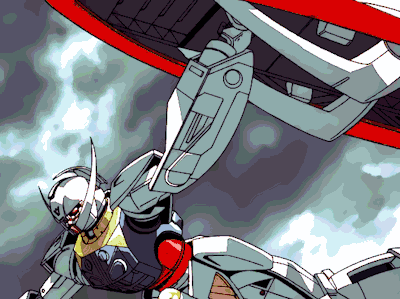
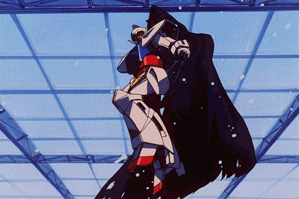
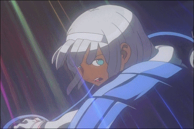

Turn ∀ Gundam
More Info
∀ Gundam, or Turn ∀ Gundam, is one of the first Gundam types to actually look more alien, as most Gundams took the basic visual appearence of the original Gundam RX-78-2 model but added new qualities. ∀ Gundam is considered one of the most powerful Gundams, as it has the power to disable all types of technology and destroy it using the "Moonlight Butterfly" attack. It also can create storms using its nanomachines, cloak, and bend light.